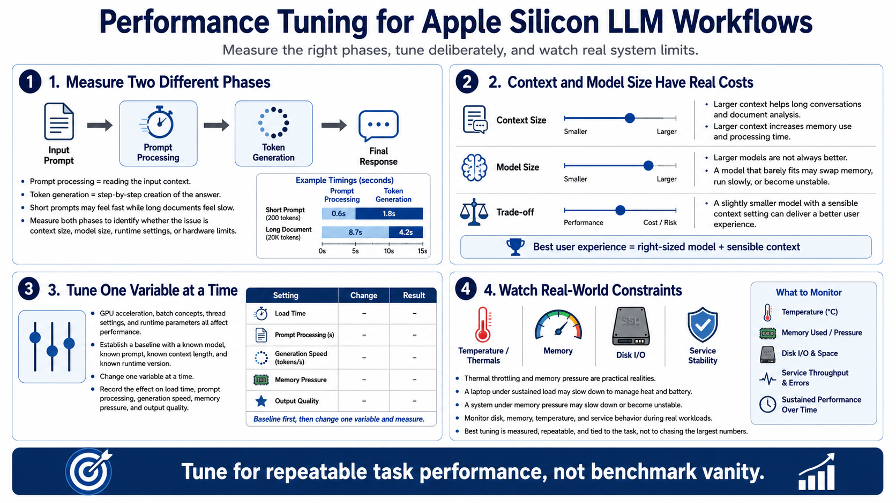

Performance Tuning and Context Management
Connecting to LMS... Progress: in progress

Narration
Performance tuning starts by separating prompt processing speed from token generation speed. Prompt processing is the work of reading the input context. Token generation is the step-by-step creation of the answer. A system may feel fast with short prompts but slow with long documents. Measuring both phases helps identify whether the issue is context size, model size, runtime settings, or hardware limits.
Context window size has a direct operational cost. Larger context can help document analysis and long conversations, but it increases memory use and processing time. Larger models are not always better either. A model that barely fits may swap memory, run slowly, or become unstable under real use. A slightly smaller model with a sensible context setting may produce a better user experience.
GPU acceleration, batch concepts, thread settings, and runtime parameters can influence performance, but changing too many settings at once makes troubleshooting harder. Establish a baseline with a known model, known prompt, context length, and runtime version. Then change one variable at a time. Record the effect on load time, prompt processing, generation speed, memory pressure, and output quality.
Thermal throttling and memory pressure are practical realities. A laptop under sustained load may reduce performance to manage heat and battery. A system under memory pressure may slow down or become unstable. Monitor disk, memory, temperature, and service behavior during real workloads. The best tuning process is measured, repeatable, and tied to the task rather than chasing the largest possible numbers.